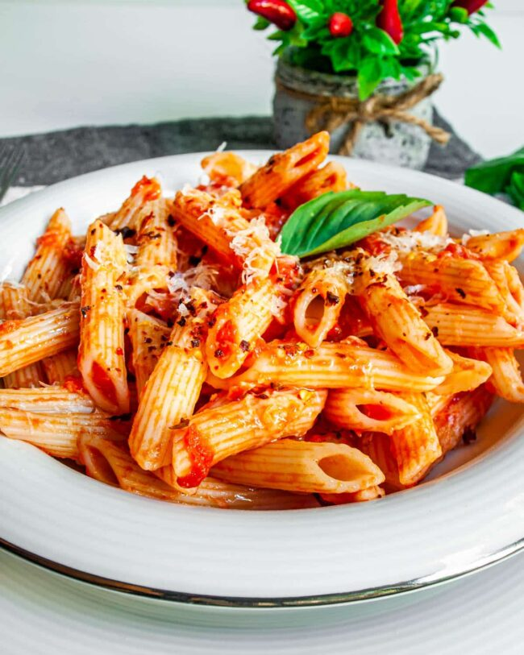

Penne Arrabbiata

Deliciously saucy and spicey; served with freshly prepared penne and red chilli garnish.
- Penne Pasta
- Pomodoro Sauce
- Garlic Chilli Paste
- Chopped Parsley
- Salt
- Hard Cheese
- Red Chilli Garnish
- Sprig of Parsley
- Add dry penne portion into a pan of boiling water for the required 15-20 minutes.
- Add 4 oz of pomodoro sauce, tea spoon of garlic chilli paste to a pan and mix.
- Once bubbling, add pinch of salt and pinch of parsley to the sauce and mix.
- Once ready, filter penne out with the collinder (safety first!), add to the sauce and mix.
- Plate up the pasta neatly with a clean pair of cooking tongs.
- Add hard cheese, chilli garnish and sprig of parsley for the garnish.
- Enjoy! And remember the wash up!